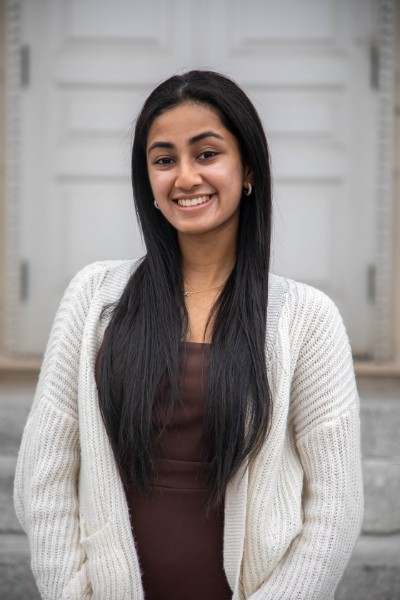
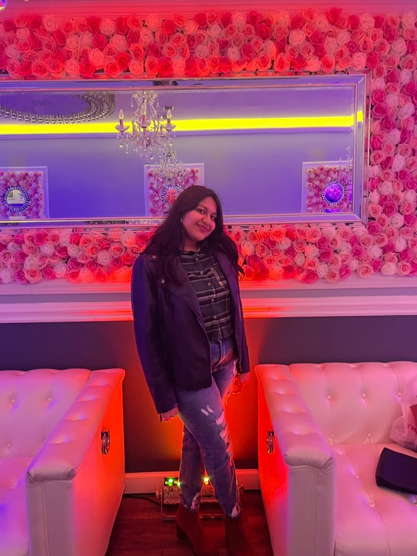
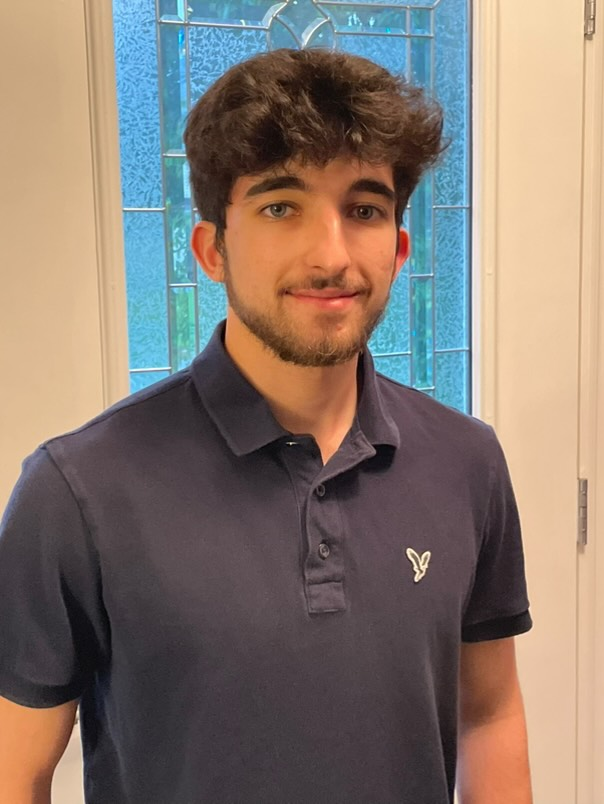
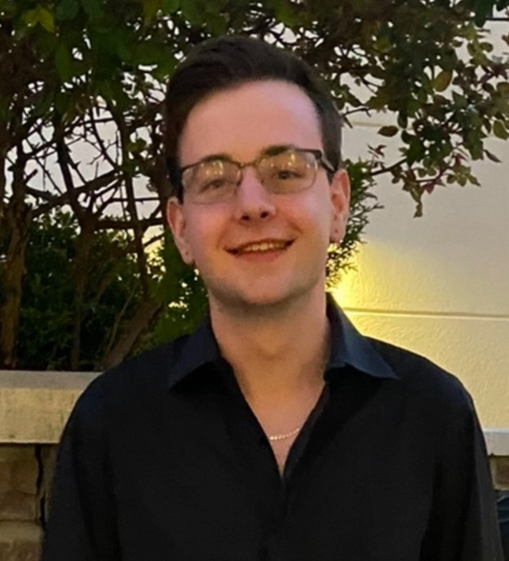
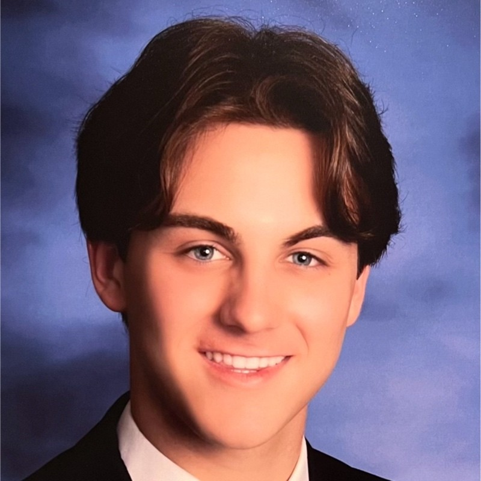
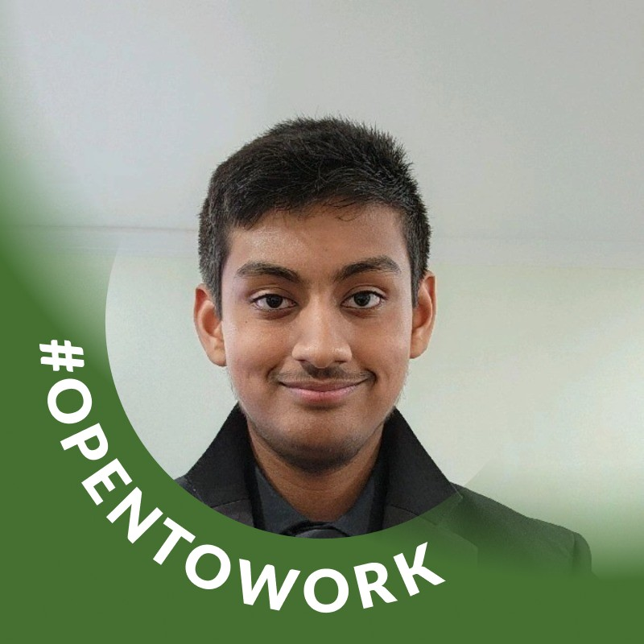
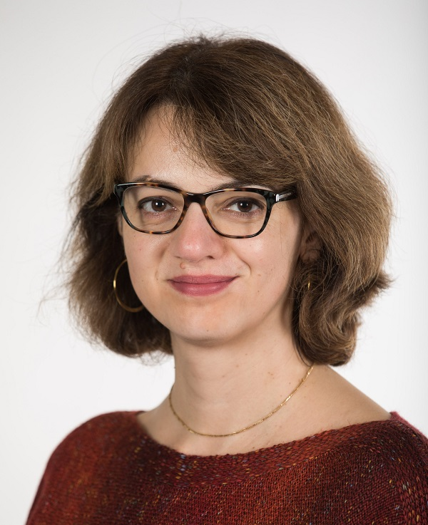

Executive Board
-
Khusi Patel President Computer Science Major and Finance Minor Junior

- Gonzalo Chavez Ramos Vice President Computer Science Major and Finance Minor Sophomore
-
Saanvi Goyal Treasurer Computer Science Major Senior

-
Francessco Musto Secretary Computer Science Major Sophomore

-
Matthew Holzer Outreach Co-Chair 1 Computer Science Major Senior

-
Charlie Johnson Outreach Co-Chair 2 Computer Science Major Junior

-
Sonit Ambashta Webmaster Computer Science Major and Mathematics Minor Junior

-
Dr. Andrea Salgian Advisor Chair of Computer Science Department
